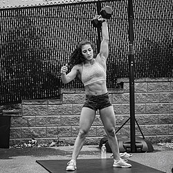

These articles provide detailed Tabata routines suitable for beginners to advanced users, including full programs with exercises like burpees, squats, and high knees. 8fit's 25-Minute Tabata Workout: Features beginner (high knees, squats, crunches) and advanced (burpees, dynamic squats, spiderman planks) plans, emphasizing total-body fat burn and cardio improvement. The HIIT Coach's 17 Brutal Routines: Includes leg crushers (jump squats + lunges), grave diggers, and thrusters; ideal for short, intense sessions with progressions. GymBeam's 12-Minute Full-Body Workout: Bodyweight HIIT for home/gym, aiding weight loss and performance with scalable challenges like resistance bands.
Tabata boosts aerobic/anaerobic capacity, fat loss, VO2 max, and endurance more efficiently than steady-state cardio, per original studies on athletes. Articles like "Tabata: Transform Your Body in 4 Minutes" detail benefits such as increased EPOC, muscle definition, and reduced disease risk. "Is Tabata Effective?" reviews the 28% anaerobic gains from Dr. Izumi Tabata's protocol.
A 2026 review protocol examines Tabata's effects on youth fitness and mental health, noting its time-efficiency for physical inactivity issues. "Tabata in Perspective" (2025) contextualizes its global adaptations from speed skating origins. 